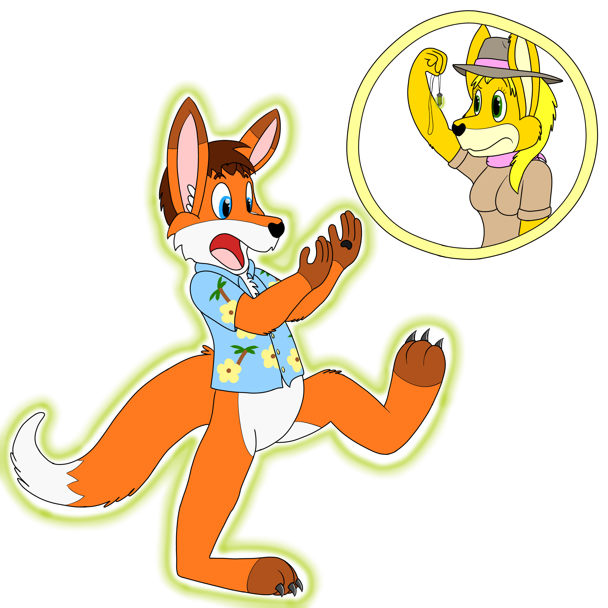

Transformation Twitter Polls
-
(June 2, 2016)
What's your favorite type of inanimate transformation?
-
(May 31, 2016)
Would you accept an offer to be turned into the other gender for 24 hours?
-
(May 26, 2016)
Which of these B mammals would you rather be?
-
(May 24, 2016)
You're stranded on a desert island. Would you take an offer to become a dolphin?
-
(May 19, 2016)
What type of restriction should a shapeshifter have on their powers?
-
(May 17, 2016)
Would you permanently become a dragon if it meant saving the world?
-
(May 12, 2016)
New Pokémon starters were announced. Which one would you rather become?
-
(May 10, 2016)
Time to fly! Which of these would you rather be to take to the sky?
-
(May 5, 2016)
You've dropped something in deep water. Which of these would you rather become to retrieve it?
-
(May 3, 2016)
*ZAP* You are now a dog. Have a nice day! (How do you react?)
-
(April 28, 2016)
Which of these A+ animals would you rather be turned into, given the choice?
-
(April 26, 2016)
You are offered to be turned into a tortoise to extend your lifepsan. Do you take it?
-
(April 24, 2016)
What's your favorite source for transformation fiction?
-
(April 21, 2016)
Which of these popular species would you LEAST like to be transformed into?
-
(April 19, 2016)
You wake up one morning and are now a horse. Which of these would you prefer to do?
-
(April 17, 2016)
Should a shapeshifting character care about what gender he/she/it is?
